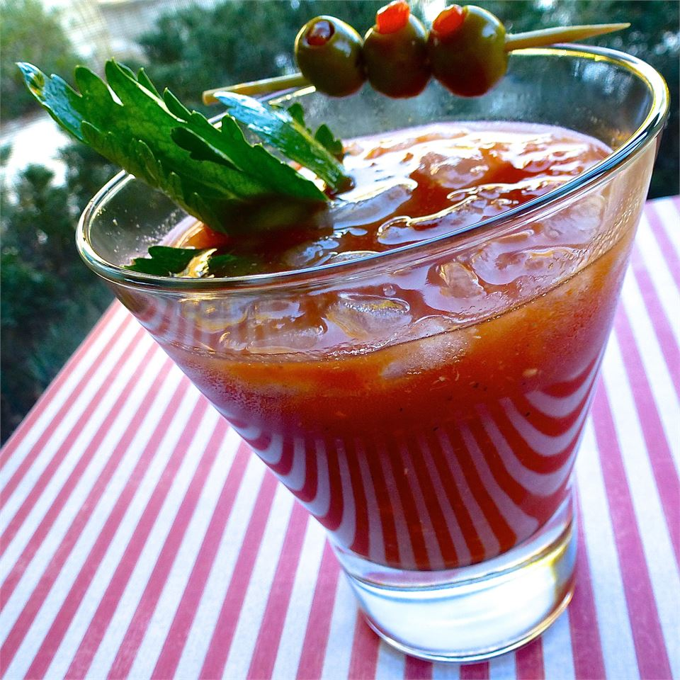

Bloody Mary
Taken from here

Description
A yummy bloody mary
You really can't mess these up
Ingredients
- 4 cups tomato juice
- 1 1/3 cups vodka
- 3 lemons, juiced
- 1 1/2 tbps worcestershire sauce
- 1 1/2 tbps horseradish
- 3/4 tsp hot sauce
- 1/2 tsp celery salt
- 1/2 tsp ground black pepper
Instructions
- Stir everything together
- Put in a pitcher, serve individually
- Garnish with celery, bacon, and olives
Return to home